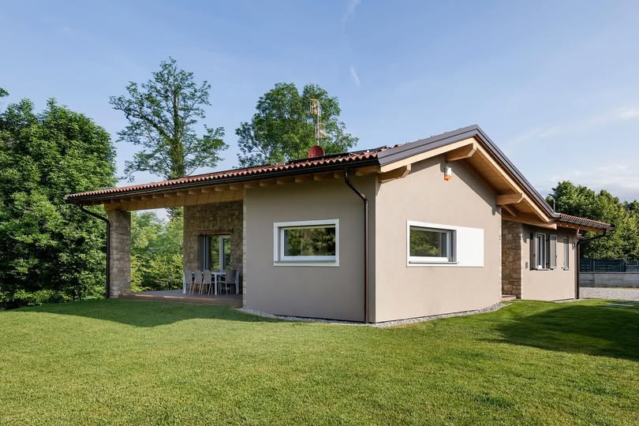
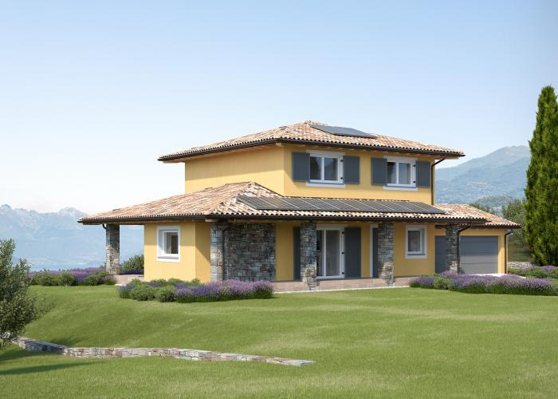
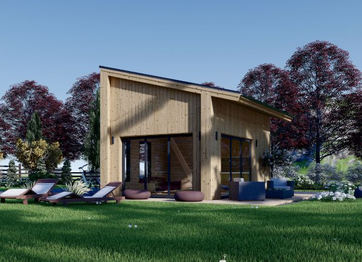
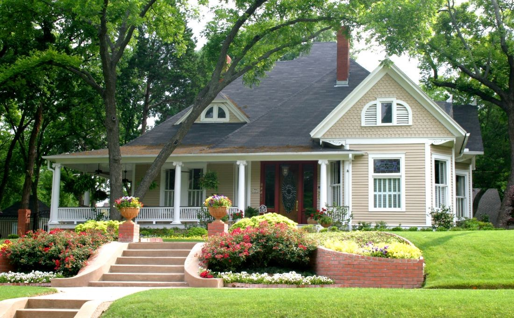
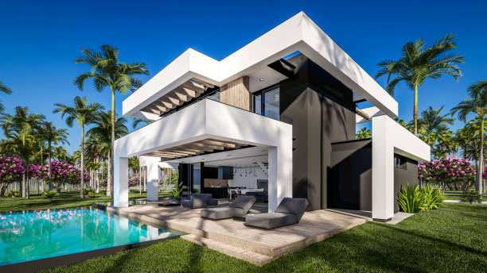
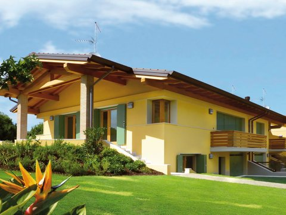
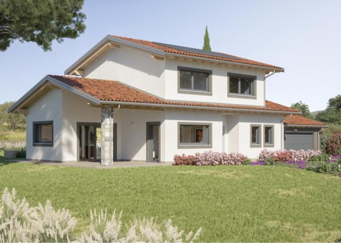

170.000€
Villetta, via Tocco da Casauria, Roma
Casa rustica a un piano con muri in cemento e mattoni rossi, tetto in tegole rosse e un portico coperto con sedie in vimini. Attorno, un ampio prato verde con qualche albero da frutto e un sentiero in ghiaia che conduce all’ingresso.
|🏡 3 locali|📐 55m²|🛁 1 bagno|🪑 portico|
Villetta, via Tocco da Casauria, Roma
Casa rustica a un piano con muri in cemento e mattoni rossi, tetto in tegole rosse e un portico coperto con sedie in vimini. Attorno, un ampio prato verde con qualche albero da frutto e un sentiero in ghiaia che conduce all’ingresso.
|🏡 3 locali|📐 55m²|🛁 1 bagno|🪑 portico|

1.500€/mese
Villetta, via Città Spettacolo 9, Ponticelli, Benevento
Casa a un piano, con facciata gialla e ampio prato che la circonda. Comoda e ben posizionata, include anche un garage. Ideale per chi cerca spazio e tranquillità.
|🏡 4 locali|📐 85m²|🛁 2 bagni|🚗 garage|🍇 cantina|🪟 1 balcone|
Villetta, via Città Spettacolo 9, Ponticelli, Benevento
Casa a un piano, con facciata gialla e ampio prato che la circonda. Comoda e ben posizionata, include anche un garage. Ideale per chi cerca spazio e tranquillità.
|🏡 4 locali|📐 85m²|🛁 2 bagni|🚗 garage|🍇 cantina|🪟 1 balcone|

900€/mese
Casa sul lago, via Guglielmo Marconi 26, Garda
Affascinante casa in legno situata sul lago, immersa nella natura. Grandi vetrate offrono una vista spettacolare sulle vette circostanti. Spazio esterno ideale per rilassarsi e godersi il paesaggio. Perfetta per chi cerca tranquillità e un rifugio rustico in montagna.
|🏡 1 locali|📐 20m²|🛁 1 bagni|🪑 portico|
Casa sul lago, via Guglielmo Marconi 26, Garda
Affascinante casa in legno situata sul lago, immersa nella natura. Grandi vetrate offrono una vista spettacolare sulle vette circostanti. Spazio esterno ideale per rilassarsi e godersi il paesaggio. Perfetta per chi cerca tranquillità e un rifugio rustico in montagna.
|🏡 1 locali|📐 20m²|🛁 1 bagni|🪑 portico|
 150.000€
150.000€Villetta, via Diaz 6, Sant'Agata de'Goti
Accogliente casa blu, dotata di doppio garage e un piccolo prato esterno. Al suo interno, un soppalco che aggiunge spazio e carattere all’ambiente. Ideale per chi cerca una soluzione funzionale con un tocco di originalità..
|🏡 2 locali|📐 70m²|🛁 2 bagni|🚗 2 garage|🔒 soffitta|

200.000€
Villa, via Mascia, Pesco Sannita
Casa con facciata rossa in legno e tetto in tegole miste nere e rosse. Un portico accogliente si affaccia su un ampio prato esterno. All’interno, un camino aggiunge calore, mentre una grande soffitta offre ulteriore spazio.
|🏡 3 locali|📐 120m²|🛁 2 bagni|🚗 1 garage|🔒 soffitta|🪑 portico|
Villa, via Mascia, Pesco Sannita
Casa con facciata rossa in legno e tetto in tegole miste nere e rosse. Un portico accogliente si affaccia su un ampio prato esterno. All’interno, un camino aggiunge calore, mentre una grande soffitta offre ulteriore spazio.
|🏡 3 locali|📐 120m²|🛁 2 bagni|🚗 1 garage|🔒 soffitta|🪑 portico|
 1.400€/mese
1.400€/meseCasa rustica, via Mascia, Pesco Sannita
Casa con muro esterno in pietra, dallo stile rustico e accogliente. Spazio esterno con ampio prato e una zona pavimentata con mattonelle, perfetta per grigliate e momenti di svago. Completano la proprietà un comodo balcone per godersi la vista.
|🏡 3 locali|📐 135m²|🛁 2 bagni|🚗 1 garage|🪑 portico|🪟 1 balcone|

350.000€
Villa, via dei Pozati 3, Trento
Villa con grandi vetrate che si affacciano sulla piscina, portico esterno e un ampio prato per momenti di relax. Le pareti in cemento nero e legno conferiscono un design elegante e contemporaneo.
|🏡 4 locali|📐 160m²|🛁 3 bagni|🪑 portico|🏖️ piscina|
Villa, via dei Pozati 3, Trento
Villa con grandi vetrate che si affacciano sulla piscina, portico esterno e un ampio prato per momenti di relax. Le pareti in cemento nero e legno conferiscono un design elegante e contemporaneo.
|🏡 4 locali|📐 160m²|🛁 3 bagni|🪑 portico|🏖️ piscina|

1.250€/mese
Villetta, via Giovanni Pierluigi da Palestrina 2, Milano
Casa con facciata gialla e finestre su più lati che garantiscono ottima luminosità. Dotata di due garage, un piccolo prato esterno e dettagli strutturali con travi in legno a vista che aggiungono carattere e calore all'abitazione.
|🏡 3 locali|📐 130m²|🛁 2 bagni|🚗 2 garage|🪟 2 balconi|
Villetta, via Giovanni Pierluigi da Palestrina 2, Milano
Casa con facciata gialla e finestre su più lati che garantiscono ottima luminosità. Dotata di due garage, un piccolo prato esterno e dettagli strutturali con travi in legno a vista che aggiungono carattere e calore all'abitazione.
|🏡 3 locali|📐 130m²|🛁 2 bagni|🚗 2 garage|🪟 2 balconi|

130.000€
Villetta, via dei Biscottari 4, Cassaro, Palermo
Casa con facciata bianca e finestre su tutti i lati, luminosa e ben ventilata. Il tetto in tegole rosse dona un tocco tradizionale, mentre il portico si affaccia su un prato curato con cespugli di fiori decorativi. Completa di garage, ideale per chi cerca comfort e bellezza in un contesto tranquillo.
|🏡 2 locali|📐 120m²|🛁 2 bagni|🚗 1 garage|🪑 portico|🔒 soffitta|
Villetta, via dei Biscottari 4, Cassaro, Palermo
Casa con facciata bianca e finestre su tutti i lati, luminosa e ben ventilata. Il tetto in tegole rosse dona un tocco tradizionale, mentre il portico si affaccia su un prato curato con cespugli di fiori decorativi. Completa di garage, ideale per chi cerca comfort e bellezza in un contesto tranquillo.
|🏡 2 locali|📐 120m²|🛁 2 bagni|🚗 1 garage|🪑 portico|🔒 soffitta|